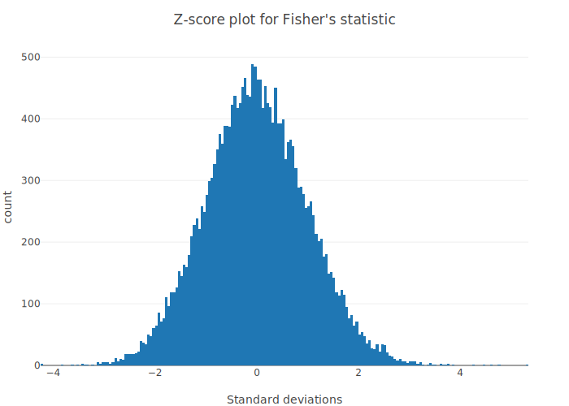

Tutorial of MendelKinship
versioninfo() # system info for reproducibilityJulia Version 1.5.0
Commit 96786e22cc (2020-08-01 23:44 UTC)
Platform Info:
OS: macOS (x86_64-apple-darwin18.7.0)
CPU: Intel(R) Core(TM) i9-9880H CPU @ 2.30GHz
WORD_SIZE: 64
LIBM: libopenlibm
LLVM: libLLVM-9.0.1 (ORCJIT, skylake)Examples data
Input data for this tutorial can be obtained on our Github, which were originally derived from the 1000 genome project. They contain 85 people and 253141 SNPs, half of which have maf$< 0.05$. Using these founders' genotype, we simulated 127 extra people, resulting in 27 pedigrees and 212 people. Although the 85 individuals are treated as founders, they were actually somewhat related, and this is reflected in the kinship comparison in the 2nd example below. For more information on this dataset, please see Mendel's documentation example 29.4.
Example 1: Theoretical Kinship Coefficient Calculation
Step 1: Preparing the pedigree files:
Recall what is a valid pedigree structure. Note that we require a header line. The extension .in have no particular meaning. Let's examine (the first few lines of) such an example:
;head -10 "Ped29a.in"Pedigree,Person,Mother,Father,Sex,,,simTrait
1 , 16 , , , F , , 29.20564,
1 , 8228 , , , F , , 31.80179,
1 , 17008 , , , M , , 37.82143,
1 , 9218 , 17008 , 16 , M , , 35.08036,
1 , 3226 , 9218 , 8228 , F , , 28.32902,
2 , 29 , , , F , , 36.17929,
2 , 2294 , , , M , , 42.88099,
2 , 3416 , , , M , , 40.98316,
2 , 17893 , 2294 , 29 , F , , 35.55038,Step 2: Preparing the control file
A control file gives specific instructions to MendelKinship. To perform theoretical kinship calculation, an minimal control file looks like the following:
;cat "control_just_theoretical_29a.txt"#
# Input and Output files.
#
pedigree_file = Ped29a.in
#
# Analysis parameters for Kinship option.
#
kinship_output_file = just_theoretical_output.txtStep 3: Run the analysis in Julia REPL or directly in notebook
# load packages
using MendelKinship, CSV
# run analysis without printing OpenMendel's default messages
Kinship("control_just_theoretical_29a.txt")
# import result into dataframe for closer inspection
# result = CSV.read("just_theoretical_output.txt") Welcome to OpenMendel's
Kinship analysis option
Reading the data.
The current working directory is "/Users/biona001/.julia/dev/MendelKinship/docs/src/man".
Keywords modified by the user:
control_file = control_just_theoretical_29a.txt
kinship_output_file = just_theoretical_output.txt
pedigree_file = Ped29a.in
Analyzing the data.
Mendel's analysis is finished.Step 4: Interpreting the result
MendelKinship should have generated the file just_theoretical_output.txt in your local directory. One can directly open the file, or import into the Julia environment for ease of manipulation using the DataFrames package. The fourth column contains the desired theoretical kinship coefficient. The 5th column contains the (deterministically) estimated Delta7 matrix. The 6th through the 14 columns contain the (stochastically) estimated Jacquard's 9 identity coefficients.
Example 2: Compare theoretical/empirical kinship values
When both pedigree structure and complete SNP information are available, we can compare theoretical/empirical kinship coefficients. In practice, however, we often have individuals without genotype information, but nevertheless must be included in the pedigree structure. MendelKinship does not handle this situation yet, but an analysis option that supports these data is being developed. For now you can impute genotypes but keep in mind that the relationship comparison for these individuals who lack all genotype information will not be meaningful.
Step 1: Prepare pedigree file and SNP data file
The pedigree file is the same as the pedigree file in the previous example. The SNP definition file requires a header row, and should have approprietely placed commas. It may be informative to compare the following SNP definition file with the original "SNP_def29a.in" in Mendel Option 29a.
;head -10 "SNP_def29a_converted.txt"Locus,Chromosome,Basepairs,Allele1,Allele2
rs3020701,19,90974,1,2
rs56343121,19,91106,1,2
rs143501051,19,93542,1,2
rs56182540,19,95981,1,2
rs7260412,19,105021,1,2
rs11669393,19,107866,1,2
rs181646587,19,107894,1,2
rs8106297,19,107958,1,2
rs8106302,19,107962,1,2Non binary PLINK users
The SNP data files in this case must be stored in PLINK BED file in SNP-major format, with an accompanying SNP definition file. For an explanation of what these are, see MendelBase documentation.
Binary PLINK file users
If your have "data.bim", "data.bed", "data.fam" (i.e. the 3 triplet of PLINK files), then you can replace the 3 fields snpdata_file, snpdefinition_file, and pedigree_file in the next step with just 1 field:
plink_input_basename = data.
Step 2: Preparing control file
The following control file tells MendelKinship to compare theoretical kinship and empirical kinship, and output 2 interactive plots stored in .html format.
;cat "control_compare_29a.txt"#
# Input and Output files.
#
snpdata_file = SNP_data29a.bed
snpdefinition_file = SNP_def29a_converted.txt
pedigree_file = Ped29a.in
#
# Analysis parameters for Kinship option.
#
compare_kinships = true
kinship_plot = kinship_plot
z_score_plot = z_score_plotStep 3: Running the analysis
# run analysis option without printing OpenMendel's default messages
Kinship("control_compare_29a.txt")
# import result into dataframe for closer inspection
# result = CSV.read("Mendel_Output.txt") Welcome to OpenMendel's
Kinship analysis option
Reading the data.
The current working directory is "/Users/biona001/.julia/dev/MendelKinship/docs/src/man".
Keywords modified by the user:
compare_kinships = true
control_file = control_compare_29a.txt
kinship_plot = kinship_plot
pedigree_file = Ped29a.in
snpdata_file = SNP_data29a.bed
snpdefinition_file = SNP_def29a_converted.txt
z_score_plot = z_score_plot
Analyzing the data.
Kinship plot saved.
Fisher's plot saved.
Mendel's analysis is finished.Step 4: Interpreting the Result
Founders which have 0 theoretical kinships often exhibit a non-zero empirical kinship. In the first row, person 26732 and 264 have 0 theoretical kinship but their empirical kinship is pretty close to 0.125 = 1/8. That is, these 2 people which we initially thought are unrelated, may be half siblings, grandparent-grandchild, or an avuncular pair. On the otherhand, the 8th row has a founder pair that has a $-0.08$ kinship (i.e. they are very unrelated), suggesting that the standard deviation of the moments estimator may have a wide spread. There may also have been a sample mix up. Another explanation is that we are only using one chromosome's worth of data and so the estimates of kinship may be imprecise.
Interactive Plots and Tables
MendelKinship automatically generates 2 figures and 1 table to allow the user to easily compare theoretical and empirical kinship, detect outliers, and observe skewnesses in distribution. Figures are saved in .html format to enable interactive sessions. To summarize,
- The table containing all the pairwise kinship and theoretical comparisons is stored in
kinship_file_output.txt. The table is sorted in descending order of the largest deviance between the theoretical and empiric kinship. The last column lists the Fisher's Z statistic (i.e. the number of standard deviations away from mean). - The 2 plots are stored in .html format, which should be automatically be generated in your directory. These figures can be examined interactively via jupyter notebook, as demonstrated below, or opened directly via the browser.
Generated Interactive Plots part 1:
The first interactive plot allows user to quickly identify which pairs of persons have an empirical kinship most deviated from their expected (theoretical) kinship. The midpoint is placed as an orange dot for interpretability. As an example, the first row in the table above is the highest point on the left most spread. Careful readers might observe that there is a wider spread on those with 0 expected theoretical kinship. This is expected, because most people are not related to each other, so we are making many more comparisons that have 0 expected kinship.
using PlotlyJS, CSV
#import the files created from the previous example
result = CSV.read("kinship_file_output.txt")
name = Vector{String}(undef, size(result, 1))
# label the data points according to the persons names
for i in 1:length(name)
name[i] = "Person1=" * string(result[i, 3]) * ", " * "Person2=" * string(result[i, 4])
end
#create interactive graph
function compare_kinship_plot()
trace1 = scatter(;x=result[:theoretical_kinship],
y=result[:empiric_kinship], mode="markers",
name="empiric kinship", text=name)
trace2 = scatter(;x=[1/2, 1/4, 1/8, 1/16, 1/32, 1/64, 1/128, 0.0],
y=[1/2, 1/4, 1/8, 1/16, 1/32, 1/64, 1/128, 0.0],
mode="markers", name="marker for midpoint")
layout = Layout(;title="Compare empiric vs theoretical kinship",hovermode="closest",
xaxis=attr(title="Theoretical kinship (θ)", showgrid=false, zeroline=false),
yaxis=attr(title="Empiric Kinship", zeroline=false))
data = [trace1, trace2]
plot(data, layout)
end
# generate plot by this command
# compare_kinship_plot()compare_kinship_plot (generic function with 1 method)If you call compare_kinship_plot(), you should get an interactive plot that looks like:

Generated Interactive Plots part 2:
After comparing the theoretical and empirical kinships, as in the previous graph or through the outputted table directly, often one may wonder whether the observed differences between the two statistics are significantly different. As explained in our main OpenMendel paper (section 7), this difference can be precisely quantified by the Fisher's z transformation, which should give us samples from a standard normal distribution $N(0, 1)$. We ploted this statistic in plot 2, and at first glance, the distribution is approximately normal. In Julia, we can easily verify this by computing some summary statistics:
function fishers_transform()
trace1 = histogram(x=result[:fishers_zscore], text=name)
data = [trace1]
layout = Layout(barmode="overlay",
title="Z-score plot for Fisher's statistic",
xaxis=attr(title="Standard deviations"),
yaxis=attr(title="count"))
plot(data, layout)
end
# generate plot by this command
# fishers_transform()fishers_transform (generic function with 1 method)If you call fishers_transform(), you should get an interactive plot that looks like:

Compute mean and variance
We can verify that the Fisher's statistic is approximately normal by checking its 1~4th moments:
using Statistics, StatsBase
my_zscore = convert(Vector{Float64}, result[:fishers_zscore])
mean(my_zscore), var(my_zscore)(-1.2084702388691578e-16, 1.0)Compute skewness and excess kurtosis
skewness(my_zscore), kurtosis(my_zscore)(0.0923976421835524, 0.10657222736224581)Conclusions
MendelKinship provides a rapid way to calculate the theoretical kinship, which requires accurate pedigrees. Calculation of empirical kinships is also possible if genotypes at multiple markers are availble. Further, it can compare these kinships using Fisher's Z statistic when both the pedigrees and markers are available.